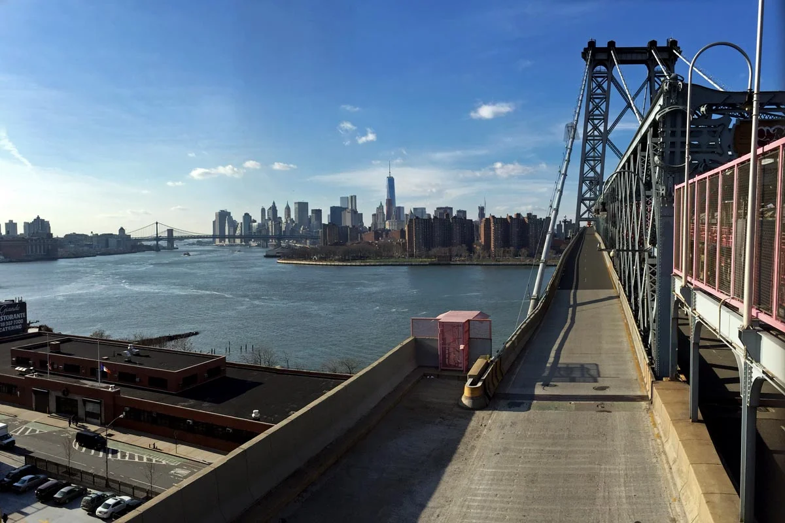
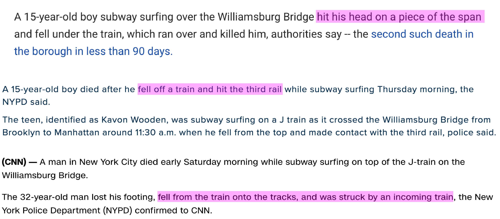

Delancey is close to the Williamsburg Bridge, open air with spectacular views of Manhattan.

But the bridge is spanned by low-hanging girders, with trains passing close to each other.

One of the boys died after being hit on the head by something, the others falling onto the opposite track.
